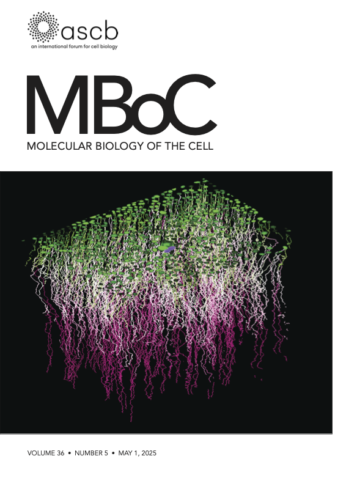
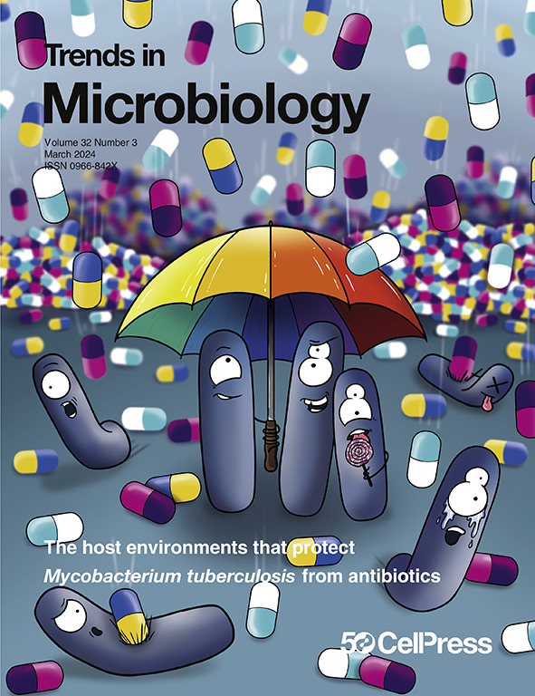

featured
Covers & Featured Images

Molecular Biology of the Cell
2025
Manuscript Cover · Vol. 36(5)

Trends in Microbiology
2023
Manuscript Cover · Vol. 32(3)

The Francis Crick Institute
2025
Images of Science Exhibition · Gallery Feature